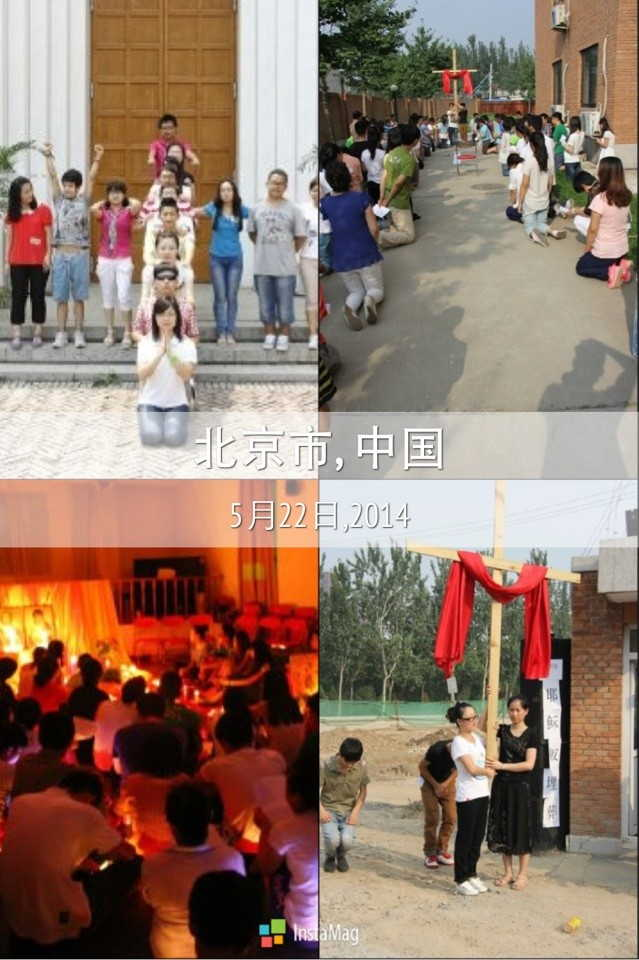

心里洁淨的人是有福的，因为他们要看见天主。
（玛 5:8）
北京教区第七届《显容》大学生夏令营
2015.7.15~2015.07.24
主题:心里洁淨的人是有福的，因为他们要看见天主。（玛 5:8）
起止时间：2015年7月15日--7月24日
招生范围：全日制专科、本科在校大学生；
集合时间：7月15日早上十点
集合地点：北京西什库教堂
报名方式：通过以下的联系方式，也可找本堂负责神父进行报名
联系人：
王娇：15501290960
吴桐：13718638892
鲍晗：13161465437
温馨提示：
1.自带洗漱及生活用品
2.不要带过于暴露的衣服，上衣有袖、裤子过膝
3.带一双运动鞋，便于参加户外活动
耶稣在大博尔山显圣容，使年轻人可以通过夏令营的学习在日后生活彰显天主的荣耀，愈显主容。
耶稣显圣容是一个值得纪念并有特殊意义的日子，最初发起夏令营活动的孙永书、张晓卓、郭文武三位神父中，其中两位是在8月6日耶稣显圣容那一天祝圣的。“显容”也为纪念这一有意义的日子。
耶稣显圣容，云中父命令，这是我的爱子你们要听从他；大学生及青年们同聚一起，共同生活学习、共融祈祷，与主相遇。学会奉献、学会爱人、学会如何在生活中活出信仰、传播信仰，激发大学生及青年的活力，发挥大学生及青年们的力量。
a.在基督内激发活力，活出自我
b.借着圣言、教理、礼仪、祈祷、活动学习学会包容、学会承担
c.了解教会、深刻信仰，服务于各个堂区的团体
d.让更多的年轻人体现修院生活，培育圣召
e.与主相遇，传播福音
总负责：郭文武神父
教务：卞寅神父
灵修：刘振田神父
后勤：于太勇神父
办公室
北京教区“显容”大学生夏令营起始于2009年7月，每年的7月，把青年学生聚集在北京天主教神哲学院，七天的时间处于一个完全封闭的环境中，每天感受上主的临在，在一起感受修院生活，感受集体生活。如今，“显容已经七岁了，虽然“显容”这七年走的步履蹒跚，可是天主时时刻刻都在我们身边，帮助我们战胜各种困难，还有教友及服务人员们的无私奉献，有了今天的“显容”。如今，“显容”越来越壮大，越来越成熟……
北京教区首届“显容”大学生夏令营开始于2009年7月19日，结束于7月26日，主题是“显容”，取义彰显天主圣容，在生活中时时刻刻彰显天主，营歌为《Together we can》
首届“显容”是在探索中开始的，由孙永书、郭文武、张晓卓三位神父一起负责，营员由来自北京、深圳、四川、河北等地的60多名具有青春活力的大学生组成，他们在2009年7月19日这一天齐聚北京，齐聚海淀后八家，齐聚北京天主教神哲学院。
在这七天中，我们一起生活，一起学习，一起活动，一起交流，一起祈祷……在这七天之中，我们有泰泽祈祷，在静默中与天主交流；我们有包饺子，品尝自己亲手制作的美味；我们有“不倒森林”的拓展活动，在竞争中培养默契……七天的学习和生活让所有人都爱上了这里，爱上了这种生活，结业的时候都恋恋不舍……
第二届“显容”开始于2010年7月18日，结束于7月25日，本届主题为“最美的祝福”，营歌为《这一生最美的祝福》。
第二届“显容”虽然有了小小的经验，但仍是个探索中前进。2010年的7月18日，在孙永书、张晓卓、郭文武三位神父在组织下，将近80名大学生在这一天齐聚北京天主教神哲学院，开始了为期七天的学习和生活。值得一提的是，第二届“显容”请到了三位修女为来带领讲课和祈祷，让我们体验了各种的祈祷方式。
在这七天中，我们一起学习、一起做拓展活动、一起祈祷、一起做游戏、一起精心准备结业晚会……在这七天中，我们有破冰活动的“雷区”取水、篮球赛，在合作活动中相互熟悉；有圣经小游戏“耶利哥的瞎子”，在游戏中体验生活、体验天主的爱；有课后的小组讨论，在交流中深化课程；有后桑峪的朝圣之旅，跟随着耶稣的十字苦路走到圣母妈妈跟前，在路途中体验耶稣的苦难；有各种各样的祈祷方式，在静默中用心与天主交谈；有结业晚会的精彩节目：少林奶奶、夏威夷草裙舞以及神父们的话剧，在欢声笑语中结束七天的生活……这一切的一切无不让我们真切感到天主给我们的一切将是我们一生最美的祝福！
第三届“显容”开始于2011年7月18日，结束于7月25日，本届主题为“Follow me”，营歌为《召唤》。
第三届“显容”主要由张晓卓、郭文武两位神父负责，在2011年的7月，来自全国各地的60多位的大学生齐聚北京天主教神哲学院。与之前两届不太一样的是，第三届“显容”在组织管理方面，有了营员的策划与参与；在日常课程与祈祷方面，由可爱的修女带领……
在这七天中，我们一起交流、一起学习、一起祈祷、一起徒步朝圣、一起做游戏去体验人生、一起与美国的大学生相互交流信仰……在这七天之中，我们在修女的带领下静心祈祷，在静默中用心与天父交谈，聆听天父的声音；我们与来自美国的大学生们一起交流信仰，在不同的文化生活中找寻我们共同的信仰；我们去北京长辛店教堂朝圣，去敬老院探望老人们；我们一起做游戏，在“默契”的配合中寻找欢乐；我们一起走“人生路”，在游戏中体验人生路上的摸索前进与坎坷；我们有泰泽祈祷，为各种不同的祈祷意向像慈爱的天父献上我们的祈祷……也在这七天生活中听见天主的召唤：来，跟随我！
第四届“显容”开始于2012年7月15日，结束于7月22日，本届主题为“与主相遇”，营歌为《认识你真好》。
第四届“显容”主要由张晓卓、郭文武两位神父负责，但与往届有两个不同：其一：这届夏令营从初期的策划到后来的管理，几乎完全由营员们自己负责，神父们只是发挥一个指导纠正的职责；其二：这届夏令营，“显容”与石家庄的“时雨”青年团体有了交流活动；这使得“显容”更加的成熟了……
在这七天中，我们一起徒步朝圣、一起做游戏、一起祈祷、一起学习……在这七天之中，我们一起策划准备泰泽祈祷，像天父献上我们各种意向得祈祷；我们一起学习圣经，在学习中体会天父对我们的宽容和慈爱；我们一起徒步朝圣（起于北京天主教神哲学院，止于北京西什库教堂），在旅途中一步步走向天主的圣殿；我们一起制作“麦面饼”，向天父献上我们的心声；我们做团体修和圣事，在忏悔中与天主和好；我们一起给父母写一封信，在信中向他们诉说我们的感恩……
第五届“显容”开始于2013年7月14日，结束于7月21日，本届主题为“Faith”，营歌为《我的灵魂颂扬上主》。
第五届“显容”由郭文武、卞寅、于太永、白国良、刘振田五位神父负责，相对于前四届而言，第五届“显容”已经成熟了，已经成为了一个完全独立的团体，有了“显容”自己的Logo……
在这七天中，我们一起学习、一起准备各种不同的活动、一起朝圣、一起准备泰泽祈祷、在结业晚会中一起欢乐……在这七天之中，我们自己制作属于我们自己的圣像，在动手制作中体会天父创造的美妙；我们在修院中准备十四处苦路，在过程中体会耶稣苦路中的艰辛与痛苦；我们一起去朝圣（起于修院，途径西堂、东堂、北堂、止于南堂）在路途中一步步走向天主，去感受每所教堂的不同；我们一起准备大祈祷，效法耶稣为门徒们洗脚，感受天主对我们的慈爱与呵护……
第六届“显容”开始于2014年7月14日，结束于7月23日，本届主题为“爱”，营歌为《我的灵魂颂扬上主》。
第六届“显容”由郭文武、卞寅、于太永、白国良、刘振田五位神父负责，相对于前四届而言，第五届“显容”已经成熟了，已经成为了一个完全独立的团体，有了“显容”自己的Logo……
在这七天中，我们一起学习、一起准备各种不同的活动、一起朝圣、一起准备泰泽祈祷、在结业晚会中一起欢乐……在这七天之中，我们自己制作属于我们自己的圣像，在动手制作中体会天父创造的美妙；我们在修院中准备十四处苦路，在过程中体会耶稣苦路中的艰辛与痛苦；我们一起去朝圣（起于修院，途径西堂、东堂、北堂、止于南堂）在路途中一步步走向天主，去感受每所教堂的不同；我们一起准备大祈祷，效法耶稣为门徒们洗脚，感受天主对我们的慈爱与呵护……
如今，北京教区第“显容”大学生夏令营已经成熟了，从“显容”走出去的兄弟姐妹们都已融入到各个堂区的各个岗位。2015年北京教区第七届“显容”大学生夏令营即将开始，“显容”一年比一年精彩，一年比一年丰富，就在今年夏天，就在今年7月，我们的“显容”又一次将扬帆起航，继续演绎它的精彩……我们期待您的参与，相信在“显容”您会有意想不到的收获……
“显容”从第一届开始到第五届结束已经有营员将近400人。而当每一届显容夏令营结束其实从某种层面上来说对于我们都是一个新的开始，我们接受7天的洗礼，或是刚刚认识天主亦或是加深了对天主的认识，夏令营结束后很多人都毫不犹豫的在生活中活出信仰，用行动爱着天主爱着他人。我们服务于各个团体、各个堂区甚至在各个城市……虽然我们很多时候不在一起，但都有一颗爱天主的心、都有为教会服务的心，都毫不吝啬的发挥着青年的力量，传扬着爱的福音。每届夏令营虽然会结束，但我们没有停下爱主的脚步，反而加大步伐，义无反顾……
第五届“显容”大学生夏令营结束后，为了使更多年轻人增加信仰并在生活中活出信仰，显容每月都会有一次大聚会，每周六上午9：30都会有小聚会及分享，在聚会中可以分享生活中的喜怒哀乐，将每周的生活进行整理，分享给大家的同时就像与我们可爱的天主进行谈心。在天主的爱护、修女神父们的陪伴过程中，使我们年轻人在学校的小社会及生活的大社会中不致被打倒，并在圣神的指引下能够勇敢并且不偏离爱祢的轨道。

显容是一个青年的团体，是充满朝气的团体，同样他的信仰也不止停留在一个地方而是像蒲公英的种子一样洒满各地。信仰的脚步、朝圣地步伐我们一直在前行，每一次朝圣也都是心灵的洗礼。教会的历史、福音的传播，每一次朝圣都深深震撼着我们内心最柔软的地方，每一次都让我们觉得天主是这样的伟大，这样的爱了我们世人。显容作为一个青年人的团体，也在与其他地方的青年团体互相交流，共同成长，我们的信仰在流动。
显容的脚步一直没有停歇，他在信仰的道路上一直努力前行。也将一直走下去，不会停下爱祢的脚步。